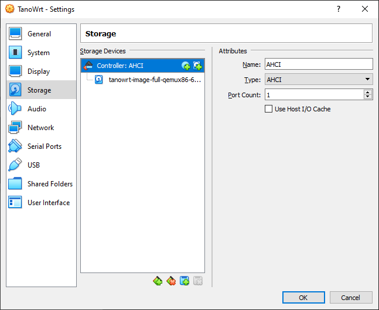

Running TanoWrt Image Inside Oracle VirtualBox
Contents
Requirements
Required Oracle VirtualBox 6.1 or higher.
Creating and Configuring Virtual Machine
From the Oracle VM VirtualBox Manager, create a new Virtual Machine:
Configure parameters in the Name and operating system group:
Name: tanowrt-qemux86-64;
Type: Linux;
Version: Other Linux (64-bit).
Configure parameters in the Memory size group:
Select 256 MB (or more).
Configure parameters in the Hard disk group:
Select: Do not add a virtual hard disk now.
Click Create button.
Now the virtual machine has been successfully created. Next you need to do a small configuration of the created virtual machine.
Click on the created virtual machine in the Oracle VM VirtualBox Manager and press Settings button (or press Ctrl + S).
Select System on the left pane:
Select ICH9 in Chipset dropdown menu.
Enable Enable EFI (special OSes only) option.

Select Storage on the left pane:
Remove existing IDE Controller (select controller and press Removes selected storage controller button.
Clicks on the Adds new storage controller button button and select AHCI (SATA).
Select created AHCI Controller and press Adds hard disk button.
Select (or add) TanoWrt VMDK image (
tanowrt-image-full-qemux86-64-screen.wic.vmdk) in the opened Hard Disk Selector window and press Choose button.

 Click OK button
Running Virtual Machine
In the Oracle VM VirtualBox Manager select virtual machine and start the VM (click on the Start button):

When system is boots up, you may log in with default credentials:
{kind=link}